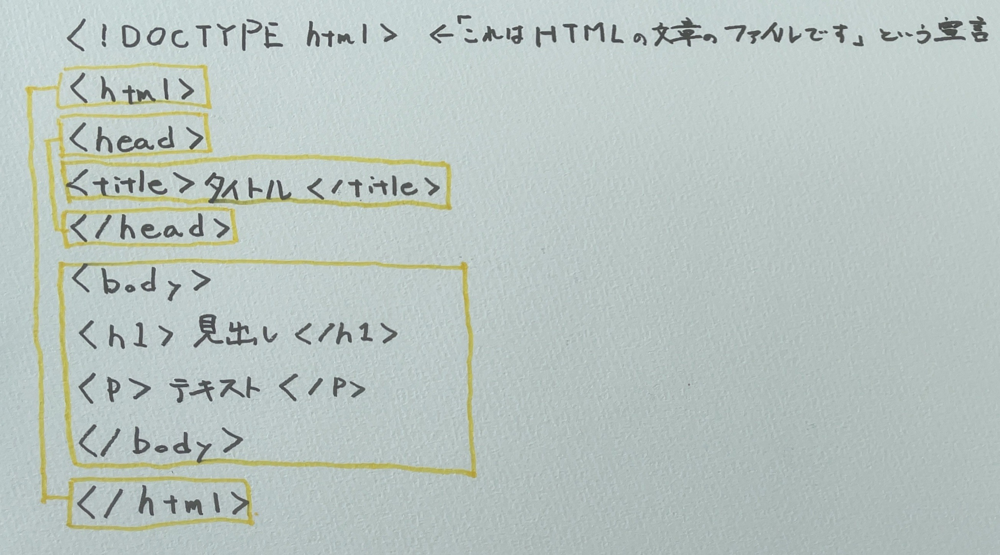

ホーム
デザイン演習Ⅰ・Ⅱ
デザイン演習 第１回
Gitについて
Gitとは
Gitとは、分散型バージョン管理システムのこと。
プログラムのファイルを管理するなどに使用されており、
バージョン管理や共有がしやすくなる利点がある。
Gitの特徴
Gitは「分散型」であることが最も大きな特徴。
Gitの利用者一人ひとりに専用の保管場所（ローカルリポジトリ）があり、個人の作業はオフラインでも可能である。
複数人で同じファイルを修正しても変更内容が上書きされない。
また、リポジトリには変更の全履歴が残るので、ファイルを過去の状態に戻すことが可能である。
インデックスはワークツリーとローカルリポジトリのつなぎ役である。
変更を行っていないデータをローカルリポジトリに送ることが無いように、「このファイルは変更を行ったか、行っていないか」
「コミットするか、しないか」等について判断してくれる。
HTMLについて
HTMLとは
HTMLとは、Hyper Text Markup Languageの略で、WEBページを作成するための言語のこと。
HTMLでWEBページの土台を作り、CSSで土台のデザインやレイアウトなどを決める。
（CSSとは、Cascading Style Sheetsの略で、Webページの見た目を指定するための言語のこと。）
ほとんどのWEBページがHTMLとCSSという言語で見た目が作られている。
HTMLの特徴

HTMLは上の画像が基本形である。
＜タグの名前＞テキスト＜/タグの名前＞という開始タグと終了タグがセットで使われる。
開始タグから終了タグのかたまりを要素と呼ぶ。
＜p＞テキスト＜/p＞で段落を作成したり、＜h1＞テキスト＜/h1＞で大見出しを作成したりできるなど、
どのようなタグでテキストを挟むかによって中身の役割が変わってくる。